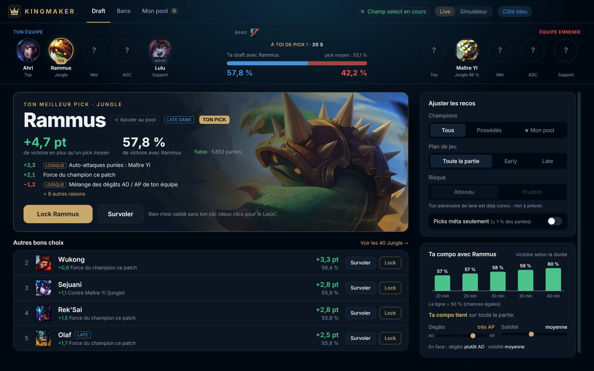
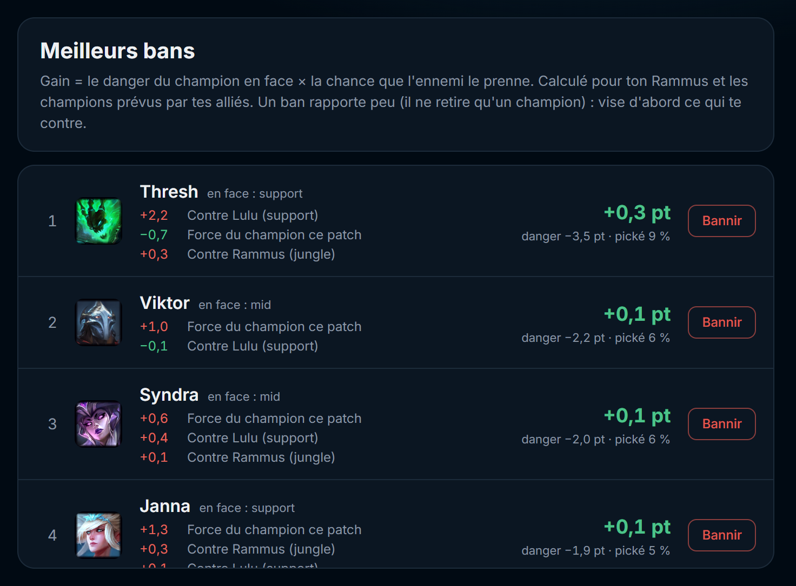

Gagne ta partie
dès la draft.
Kingmaker classe tes picks et tes bans selon ce qu'ils ajoutent vraiment à tes chances de gagner, contre l'équipe ennemie et avec la tienne. Et il t'explique pourquoi.

Tout ce qu'il faut pour drafter juste
Pas une tier list : un calcul fait pour ta draft, avec tes alliés, les picks ennemis et les bans du moment.
Le bon pick, chiffré
Chaque champion reçoit son gain de victoire, par exemple +3,7 pt : sa force sur le patch, ses matchups contre chaque ennemi, ses synergies avec tes alliés, et s'il gagne plutôt les parties courtes ou longues.
Il t'explique pourquoi
« logique Auto-attaques punies : Maître Yi ». Des règles de jeu dont le poids est appris sur les parties, pas inventé.
Branché sur ton client
Dès le champ select, ta draft se remplit toute seule : alliés, ennemis, bans. Tu survoles en un clic et tu lock en deux, jamais sans toi.
Des bans qui servent
Le danger d'un champion contre ton équipe, multiplié par la chance que l'ennemi le joue vraiment.
Ton champion pool
Garde seulement les champions que tu joues, ceux que tu possèdes, ou les picks méta du rôle.
Tes parties, ton bilan
Chaque partie est gardée avec le pick conseillé et ton résultat : tu vois si suivre les recos te fait vraiment gagner. Tout reste sur ton PC.
Tu restes aux commandes
- Ton tour, ton choix. Kingmaker met les meilleurs choix en avant, la décision reste la tienne : rien n'est jamais validé sans ton clic.
- Rôles ennemis devinés. Le client les cache : le calcul les devine d'après les champions.
- Mode Prudent. Pour un pick qui tient même si ton adversaire de lane te contre.
- Simulateur. Teste un « et si » ou prépare une draft hors partie.

Des centaines de milliers de parties, une seule question
Ce pick fait-il gagner plus souvent, dans cette draft-là ?
Collecte
Les parties classées Émeraude+ d'EUW, de NA et de Corée sont récupérées régulièrement auprès de Riot.
Apprentissage
Force de chaque champion sur le patch, matchups, synergies, composition, plan de jeu. Chaque couche n'est gardée que si elle prédit mieux des parties qu'elle n'a jamais vues, et chaque nouveau modèle est comparé à l'ancien avant d'arriver chez toi.
Ta draft
L'app télécharge le dernier modèle et fait le calcul chez toi, instantanément. Aucune donnée de ta partie n'est envoyée.
Prêt en une minute
Aucun compte à créer, rien à configurer.
Télécharge
Kingmaker-Setup.exe, sur ton PC Windows.
Lance l'installeur
L'installation se fait en quelques secondes, sans droits administrateur. Un raccourci apparaît sur ton bureau.
Lance une partie
Ouvre Kingmaker et ton client LoL : l'app passe en mode Live dès le champ select.
Questions
Est-ce que Kingmaker joue à ma place ?
Non. Il ne fait que conseiller pendant le champ select, via l'interface locale du client LoL. Survoler ou valider un champion ne se fait que quand tu cliques, et l'app ne touche jamais au jeu une fois la partie lancée.
Mes données sont-elles envoyées quelque part ?
Non. Aucun compte, aucun pseudo, rien de ta partie ne quitte ton PC : l'app ne fait que télécharger le modèle et ses mises à jour. Les pseudos des autres joueurs ne sont jamais affichés ni enregistrés.
Ça marche pour mon elo ?
Le modèle apprend sur des parties Émeraude et plus : c'est là qu'il est le plus juste. Plus bas, les grandes tendances (matchups, synergies) restent utiles, mais la force d'un champion peut différer selon l'elo.
Et quand un nouveau patch sort ?
Dès les premières parties du patch, le modèle se recale : au début, il complète avec le patch précédent, puis il passe sur les nouvelles données au fil des jours.
Comment le désinstaller ?
Paramètres Windows → Applications → Kingmaker → Désinstaller.